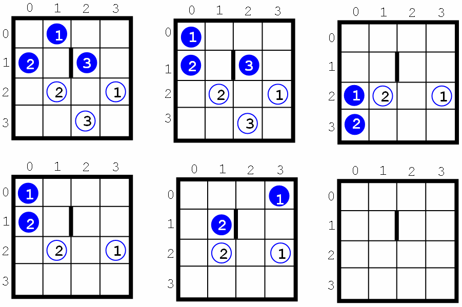

2007 ICPC World Finals · Problem F
A Marble Game is played with M marbles on a square board. The board is divided into NxN unit squares, and M of those unit squares contain holes. Marbles and holes are numbered from 1 to M. The goal of the Marble game is to roll each marble into the hole that has the same number.
A game board may contain walls. Each wall is one unit long and stands between two adjacent unit squares. Two squares are considered adjacent if and only if they share a side.
At the beginning of the game, all marbles are placed on the board, each in a different square. A “move” consists of slightly lifting a side of the game board. Then all marbles on the board roll downward toward the opposite side, each one rolling until it meets a wall or drops into an empty hole, or until the next square is already occupied by another marble. Marbles roll subject to the following restrictions:
The game is over when each marble has dropped into a hole with the corresponding number.
The figure below illustrates a solution for a game played on a 4x4 board with three blue marbles, three holes and a wall. The solution has five moves: lift the east side, lift the north side, lift the south side, lift the west side, lift the north side.

Your program should determine the fewest number of moves to drop all the marbles into the correct holes – if such a move sequence is possible.
The input file contains several test cases. The first line of each test case contains three numbers: the size N (2 ≤ N ≤ 4) of the board, the number M (M > 0) of marbles, and the number W of walls. Each of the following 2M lines contains two integers. The first integer is a row location and the second is a column location. The first M of those lines represent the locations of the marbles, where marble#1 is on the first line, marble#2 on the second, and so on. The last M of those lines represent the locations of the holes, with the location of hole#1 coming first, hole#2 coming second, and so on. Finally, the next W lines represent the wall locations. Each of those lines contains four integers: the first pair are the row and column of the square on one side of the wall and the second pair are the row and column of the square on the other side of the wall. Rows and columns are numbered 0..N-1.
The input file ends with a line containing three zeroes.
For each test case, print the case number (beginning with 1) and the minimal number of moves to win the game. If the game cannot be won, print the word “impossible”. Put a blank line after each test case. Use the format of the sample output below.
4 3 1 0 1 1 0 1 2 2 3 2 1 3 2 1 1 1 2 3 2 2 0 0 0 1 0 2 2 0 2 0 1 0 2 0 2 1 0 0 0
Case 1: 5 moves Case 2: impossible